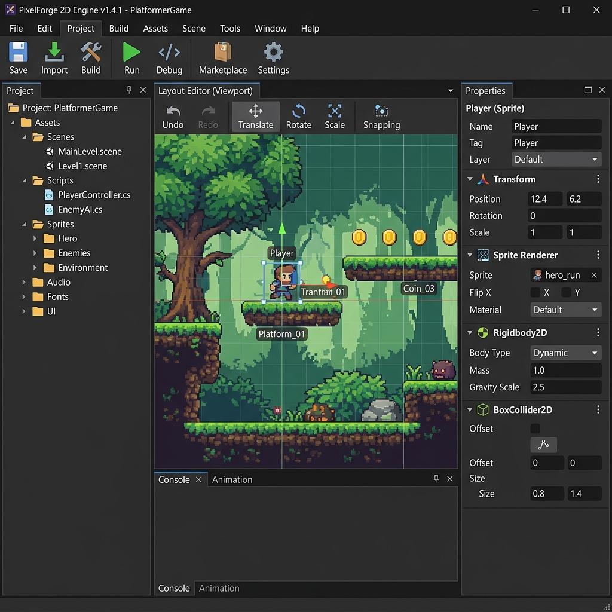
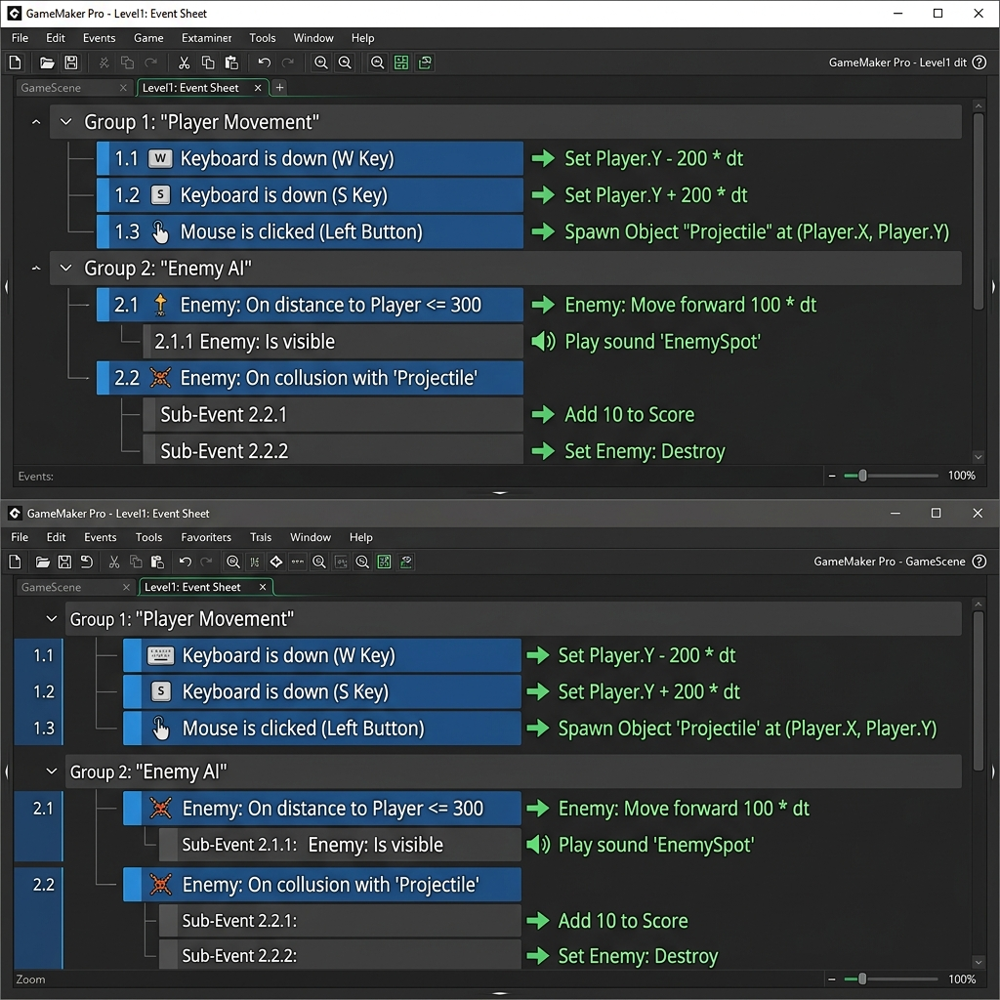
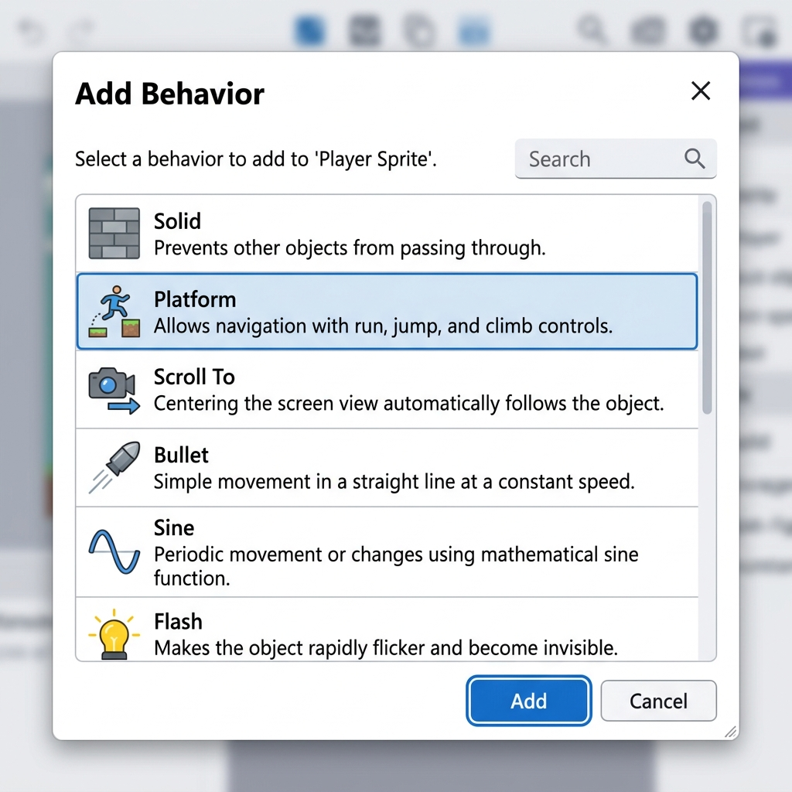

1เปิดไฟล์ที่ถูกต้อง

เปิด master_v32.capx หรือ _master_v32_extract\New project.caproj จากโฟลเดอร์ "แข่งสร้างเกมส์" ⚠️ ห้ามเปิด master_v4 (เวอร์ชันเก่า)
Project มีชื่อว่า Red Hood Adventure ขนาด Window 1500×960 และตั้งค่า Fullscreen in Browser เป็น Letterbox scale
📍 ที่ไหนใน C2: Windows Explorer → เปิดไฟล์ .capx
28 Layout ในโปรเจกต์
โปรเจกต์นี้มีทั้งหมด 8 Layout ได้แก่ title (เมนูหลัก), name (กรอกชื่อ), select (เลือกด่าน), game / game2 / game3 (เล่นจริง), ranking (อันดับ), และ Howto (วิธีเล่น)
First layout สำหรับเริ่มเกมต้องเป็น title
📍 ที่ไหนใน C2: Project bar → Layouts
35 Layer ใน Layout game
โครงสร้าง Layer จากล่างขึ้นบน มีความสำคัญมากต่อการแสดงผล:
bg - ฉากหลังที่อยู่ล่างสุดgame - ตัวละคร มอนสเตอร์ กล่องคำตอบpopup - UI Overlay เมื่อจบเกมหรือ Game OverHUD - แถบพลังชีวิต เวลา และโจทย์คำถามtransition - เอฟเฟกต์จอดำเปลี่ยนฉาก (บนสุด)
📍 ที่ไหนใน C2: Layout game → แถบ Layers ขวาล่าง
4โครงสร้าง Event Sheet

เราใช้ game sheet เพียง sheet เดียวกับทั้งฉาก game, game2, และ game3 โดยแยกเงื่อนไขการทำงานในแต่ละฉากด้วย System condition LayoutName
ส่วนเมนูแต่ละหน้าใช้ sheet แยกต่างหาก (title sheet, name sheet, select sheet, ranking sheet)
📍 ที่ไหนใน C2: Project bar → Event sheets
5ขนาด Layout ตามด่าน
แต่ละฉากมีความยาวไม่เท่ากัน: game = 4500×960, game2 = 5500×960, game3 = 6000×960
ตัวละครหลัก (Player) ต้องมี Scroll To behavior เพื่อให้กล้องแพนตามไปได้ตลอดทางจนจบฉาก
📍 ที่ไหนใน C2: คลิกพื้นที่ว่างใน Layout → Layout properties (ซ้ายมือ)
6⚠️ ข้อผิดพลาดที่พบบ่อย

- เปิดไฟล์ผิดเวอร์ชัน (สับสนระหว่าง v4 กับ v32)
- แก้ Event ผิด Event Sheet (ดู Tab ชื่อไฟล์ด้านบนให้ดี)
- First layout ใน Project settings ไม่ใช่ title ทำให้ตอนทดสอบเกมเริ่มผิดหน้า
- UID (Unique ID) ซ้ำจากการ copy Layout ทั้งหน้า ทำให้ Event ทำงานผิดเพี้ยน